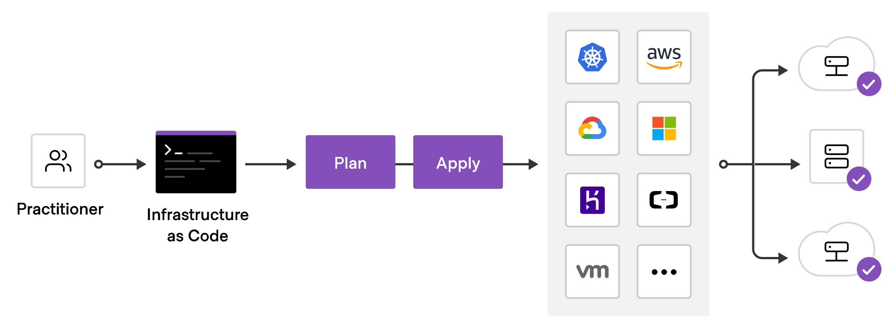

Terraform 工作流¶
官网¶
https://www.terraform.io/intro/core-workflow
实战演习/说明讲解¶
看图说话

- 初始化 - init
- 校验文件 - validate
- 计划实施 - plan
- 应用部署 - apply
- 摧毁系统 - destroy
操作步骤¶
初始化 - init¶
$ terraform init
- 初始化工作文件夹
- 准备提供商组件
校验文件 - validate¶
$ terraform validate
- 编译校验本地部署文件， 确保正确无误
计划实施 - plan¶
$ terraform plan
- 根据本地部署文件， 根据不同的云提供商， 建立不同的部署实施计划
应用部署 - apply¶
$ terraform apply
- 应用部署到各个云平台
摧毁系统 - destroy¶
$ terraform destroy
- 系统周期完成时， 摧毁系统